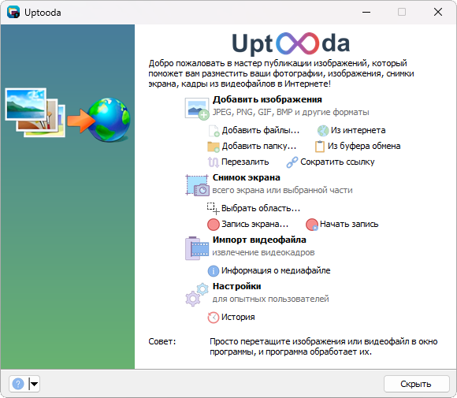

Программа предназначена для загрузки изображений в Интернет. Для хранения файлов программа использует несколько десятков общедоступных хостингов изображений и файлов. Среди них такие известные сайты, как flickr.com, imgur.com, Yandex.Disk, Dropbox и многие другие.

Внешний вид главного окна программы
Основные возможности программы:
- Загрузка изображений и файлов в интернет
Программа позволяет загружать изображения и файлы на множество сайтов (список). Среди них такие сайты, как fastpic.ru, flickr.com, Google Drive, Yandex.Disk. Также можно загружать на FTP, SFTP или WebDav сервер.
При этом программа автоматически генерирует миниатюры желаемого размера, масштабирует изображения, по желанию может добавить надпись или логотип на изображение. Поддерживаются форматы изображений JPG, PNG, BMP, GIF, TIFF, WEBP.
После загрузки программа выдает список ссылок или коды HTML, BBCode и Markdown (для форумов, блогов и т.п.). Ссылки могут быть автоматически скопированы в буфер обмена. - Извлечение кадров из видео-файлов
Программа умеет извлекать заданное количество кадров из видео-файлов различных форматов AVI, MPG, VOB, WMV, MKV, TS, MOV и многих других. При этом она может использовать установленные в системе DirectShow-кодеки (рекомендуется установить K-Lite Codec Pack), или использовать библиотеку FFmpeg, которая поставляется вместе с программой (нужно отметить галочку "Установить FFmpeg" при установке программы).
Полученные кадры можно по отдельности загрузить на сервер, либо скомпоновать в одну картинку-мозаику.
Функция предназначена в первую очередь для релизеров торрент-трекеров. - Получение технических данных о мультимедийных файлах (видео, аудио) с использованием библиотеки MediaInfo
- Снимок экрана (скриншот)
Программа умеет делать скриншоты всего экрана или активного окна, или выбранной с помощью мыши области экрана (прямоугольной области, выбранного окна, области произвольной формы). - Редактор снимков (новинка в версии 1.3.1)
Вы можете быстро отредактировать сделанный скриншот: обрезать, добавить линии, текст, стрелки, размытие, подсветить текст маркером и т.д. - Поддержка Drag-n-Drop и буфера обмена
Просто перетащите изображения или видео-файл в главное окно программы из проводника, другого файлового менеджера или веб-браузера, и программа сможет их обработать.
Также поддерживается вставка изображений, ссылок из буфера обмена. И наоборот, вы можете перетащить или скопировать файл (или изображение) из окна программы в другую программу. - Скачивание изображений из Интернета (по списку URL)
- Сокращение ссылок
Программа умеет сокращать ссылки, как для загруженных файлов (после загрузки нужно нажать кнопку Опции и выбрать пункт "Сократить ссылки"), так и просто любую ссылку из буфера обмена - Интеграция в проводник Windows
Программа добавляет в контекстное меню файлов и папок подменю "Image Uploader" (правый клик мыши по файлу), с помощью которого можно быстро загрузить файл на сервер. - Поддержка множества акаунтов
Вы можете использовать сразу несколько аккаунтов на одном и том же сайте. - Перезаливка
Загрузка изображений из текста на выбранный хостинг с сохранением исходной разметки.
Системные требования
Поддерживаемые операционные системы: Windows 7/8/8.1/10/11